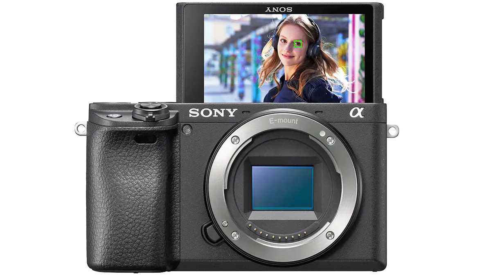

Любой текст
| ЧТ | Время | ЧС | ЗН |
|---|---|---|---|
| 08:30 - 10:05 | |||
| 10:15 - 11:50 | |||
| 12:00 - 13:35 | |||
| 13:50 - 15:25 | (лек) Базы данных 218л Фомин М. М. | ||
| 15:40 - 17:15 | (лек) Теория вероятностей и математическая статистика 218л Горяинов В. Б. | (лек) Правоведение 218л | |
| 17:25 - 19:00 | (сем) Правоведение 739л | ||
| 19:10 - 20:45 | (сем) Иностранный язык каф. Л2 | ||
Sony α6400
Sony α6400 – беззеркальная камера с сенсором формата APS-C разрешением 24 мегапикселя. По своим основным характеристикам камера не сильно отличается от моделей Sony α6500 и Sony α6300, однако изменения есть, и главное из них — усовершенствованная система автофокуса. Производитель делает акцент на возможностях отслеживания объектов в реальном времени, что актуально при съемке динамики: детей, животных, спортивных соревнований, танцев и тому подобного. Особенно выделяется фокусировка по глазам в реальном времени: камера определяет глаза модели в кадре, причем при необходимости фотограф может задать фокусировку конкретно по правому или левому глазу. Система – гибридная, включающая 425 фазовых точек фокусировки и 165 контрастных. И это не технология, перенесенная, как часто бывает, со старших моделей, эта система именно что дебютирует на Sony α6400, и только в будущем можно ждать ее появления на других камерах Sony.Камера - устройство для регистрации неподвижных изображений
Помимо этого, у новинки шире диапазон светочувствительности – ISO
Компания Sony заявляет, что в новинке используются алгоритмы изображений от полнокадровых камер компании, которые обеспечивают более реалистичную цветопередачу в JPEG – в частности, качественную работу с цветом кожи. Значительное внимание уделено и работе с видео: доступна запись 4K-видео в высоком разрешении, съемка в HDR (HLG), замедленная и ускоренная съемка, съемка таймлапсов и другие фишки.
Формула умного человкеа
e = m * c2Формула напитка
C2H5OHПримеры с кодом
Метод push() добавляет элемент
#include <stdio.h>
int main (void)
{
puts("Hello, World!");
return 0;
}
Вывод кода
Hello, World!